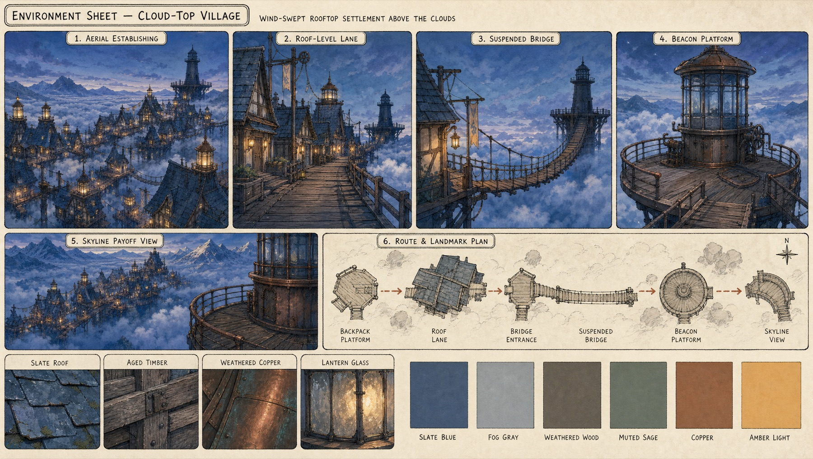
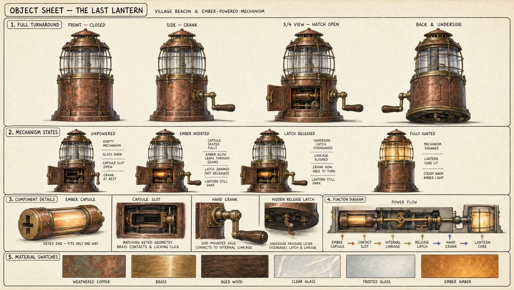

The Story
A theft that wasn't.
Told in three fifteen-second movements, with no dialogue — the picture and the sound carry it.
In a wind-swept village built on rooftops above a sea of cloud, every lantern glows at dusk — every one but a single dark beacon at the edge of the sky. Kai kneels on a maintenance platform with a glowing ember capsule in his bag. Miko, a small fox, watches it a beat too long — then snatches it and runs.
Kai gives chase across slate roofs and a swaying bridge, certain he's been robbed. But at the far tower the fox isn't hiding the ember — he's pawing at a dead mechanism, trying to reach what he cannot fix alone. The boy arrives angry, and then he understands. Not a thief. A keeper of the light.
They work it together: Kai's hands, Miko's paw on a hidden latch, one ember between them. The beacon catches, and warmth spreads tower to tower until the whole village remembers how to glow. Then the two of them sit at the edge of the platform and watch it — home, at last.
0:00 – 0:15
The Theft
The world, the ember, and a fox who runs the moment no one expects it.
0:15 – 0:30
The Revelation
A dead beacon, a boy's anger, and the quiet turn from misunderstanding to teamwork.
0:30 – 0:45
The Light
One spark, a hidden latch, and a village waking tower by tower into the dark.
World-building
The Cloud-Top Village.
Before a single shot, two reference sheets locked the place and the prop — so every keyframe and every second of animation inherits the same architecture, materials, and light.

Environment Sheet — Cloud-Top Villageaerial · roof lane · bridge · beacon platform · skyline · route map + materials + palette
A wind-swept alpine settlement of steep slate roofs, half-timbered facades, copper-and-glass lantern towers and suspended timber bridges, floating above dense fog at blue hour. The palette holds cool slate-blue and sage, with amber reserved as a narrative accent — the colour of the ember, the characters, and the light they restore. One beacon stays dark in every shot until the very end.

Object Sheet — The Last Lanternturnaround · mechanism states · ember capsule · crank · hidden latch · power-flow
The beacon is both machine and metaphor: a weathered copper housing with a glass lantern chamber, a hand crank Kai can turn, and a hidden latch beneath that only a small paw can reach. Dark while the characters misunderstand each other; radiant once they cooperate. Its mechanics were designed first so the repair reads clearly on screen — insert the ember, free the latch, turn the crank, and the light returns.
Storyboard → Screen
Twelve shots, planned before a credit was spent.
Each panel is an approved GPT Image 2 keyframe — composed, audited for continuity, then used as the start frame for animation. Click any panel to enlarge.
{kind=link}
{kind=link}